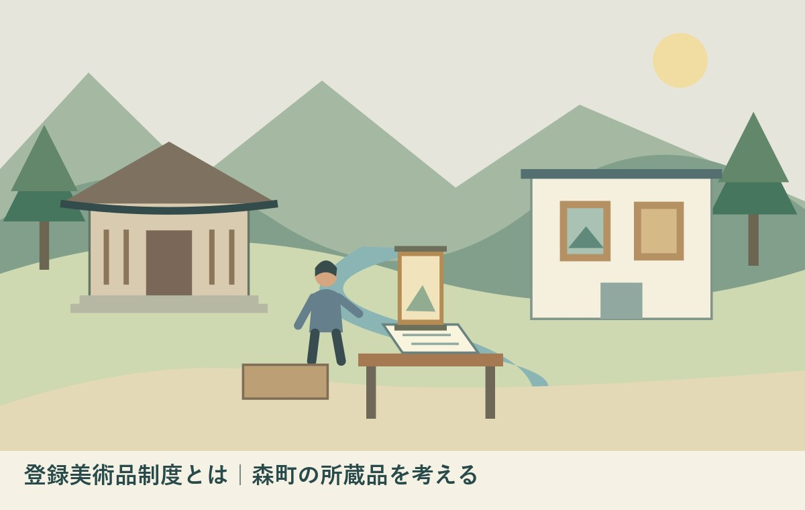

登録美術品制度とは｜森町の所蔵品を考える
／ ／ 社寺・文化財・建築

Q：受け継いだ美術品は、登録すれば値段が分かりますか？
A：登録美術品制度は、一定の価値を持つ美術品を登録し、美術館で公開する仕組みです。価格査定の制度ではありません。登録後は5年以上の公開契約などの条件があるため、家に置いたまま名称だけ登録することはできません。まず作品の来歴と所有関係が分かる資料を整理してください。
登録美術品制度は、美術館で公開するための仕組み
登録美術品制度は、一定の価値を持つ美術品を国が登録し、美術館で公開する仕組みです。古い物に名称を付けるだけの制度ではありません。文化庁の「制度の概要」は、対象作品の条件と、登録後の公開契約を説明しています。この記事の資料確認日は2026年10月21日です。
森町で絵画や書などを受け継いだご家族には、長く守ってきた人の思いもあるはずです。箱を開けて作品の名前が分からなくても、すぐ価値がないとは決まりません。私は大石浩之（磐田市／不動産業）です。手放す結論を急ぐ前に、作品と資料を分けずに残すことを考えます。
文化庁の説明では、登録の可否は価格ではなく美術的な価値によって判断され、登録時に価格評価は行いません。登録すれば値段が分かる、という理解は違います。保存と公開を考える制度と、売却のための価格を調べる仕事を、最初に分けておきます。
私は、今日、手放すかどうかを決める必要はないと考えます。まず来歴の資料を残す。作品そのものだけでなく、箱書き、購入時の記録、展示の案内など、どの資料がどの作品に対応するかを確かめます。選択を増やすために、結論より先に材料をそろえるという順番です。
森町の絵画は、作品と伝わった経緯の両方から読む
森町公式「図説森町史」の絵画の章は、社寺や個人に伝わる作品を紹介しています。蓮華寺の天台大師像や、天宮神社の三十六歌仙の扁額など、資料には対象ごとの説明があります。町にある美術を、一種類の作品や一人の作家だけで捉えないための入口です。
同章は、香勝寺の涅槃図に、制作年や寄進者などを記した墨書があると説明しています。作品の外側に見える文字や、付属する記録も、伝来を知る資料になります。ただし、掲載された作品が登録美術品制度の対象になる、という認定を示すページではありません。
森町公式の「文化財」ページには、蓮華寺の絹本著色天台大師画像などの指定記録もあります。同ページの一覧は2001年の町の統計資料を基にしています。指定の区分を知る手掛かりとし、2026年の公開予定や受入れ先を示す表としては使いません。
私は、家族が作品の由来を説明するときにも、聞いた話と書面で確認できたことを分けたいと思います。「祖父が持っていた」と「いつ購入したかが領収書で分かる」は、異なる情報です。どちらも記録できますが、裏付けの範囲まで同じにしてはいけません。
対象は「古い物すべて」ではない
文化庁の制度概要は、国宝・重要文化財に指定された作品、または世界文化の見地から歴史上、芸術上、学術上特に優れた価値がある作品を、登録対象の条件として示しています。個人が古そうだと思ったという理由だけで登録が決まる制度ではありません。
私は、対象条件が高いことを、家族の品物を否定する言葉に変えないようにしたいと思います。制度の対象になるかと、その家族にとって残す意味があるかは別です。登録に合わない場合でも、思い出や地域の記録として残すかどうかを考える余地はあります。
存命作家の作品については、文化庁の説明に2021年4月1日の基準改正が記載されています。一定の条件を満たす作品が対象へ加わりました。制作後原則10年を経過し、定められた美術館の展覧会で複数回公開された実績など、追加の要件が示されています。
2021年の改正を2026年の新設として紹介することはしません。今回は、11月1日から7日の文化財保護強調週間を前に、保存と公開の選択肢を知るための記事です。森町の特定の作品が条件に合うか、どの美術館が受け入れるかは、今回確認していません。
公開契約は5年以上、登録後の引渡しは3か月以内
文化庁の概要は、登録美術品の公開契約について、5年以上有効なことと、契約期間中に一方的な解約の申入れができない定めを条件にしています。登録後3か月以内に契約美術館へ引き渡す必要もあります。登録だけして、自宅で従来どおり保管する仕組みではありません。
私は、この5年と3か月を、家族の予定に置き換えて考えたいと思います。相談の途中で家族全員の意思がそろっていなければ、引渡しを前提にした段取りを組めません。制度の名称を覚える前に、家から離れて公開される期間を受け止められるか、話しておく必要があります。
美術館は、適切な保管と公開を行い、毎年の計画や実績を文化庁へ報告する仕組みです。公開や保管に特に注意を要する作品では、環境や経験などの条件を備える美術館との契約の見込みも問われます。近くに展示室があるだけで受入れ先が決まる話ではありません。
相談先を選ぶときは、作品の種類や状態、資料の有無を先に伝えます。私は、作品をいきなり持ち込むことを勧めません。写真等でどこまで事前確認できるか、必要な資料や相談の受付方法を聞いてから、運搬の要否を考えます。受入れの約束がないまま荷造りを始めない順序です。
良い点｜家の中だけでは難しい公開と保存を考えられる
登録美術品制度の良い点は、作品の保存と鑑賞の機会を、専門的な施設と結び付けて考えられることです。個人が長く守ってきた美術品を、家の中だけで扱い続ける以外の選択肢があります。対象作品と施設の条件をそろえて検討する仕組みを、私は評価します。
私は、家族の代替わりで「誰も詳しくないから処分する」という結論だけに進まないことにも意味があると思います。登録が適切かどうかを相談する過程で、来歴や作品の状態を整理する必要が見えてきます。すぐ制度を使わなくても、資料を残す方向は選べます。
森町の作品を調べる入口は、絵画の来歴や所蔵先を整理した既存記事にあります。今回の制度記事は、町の作品一覧を作り直すものではありません。手元の作品をどう扱うか迷うときに、公開の条件を知るための別の資料です。
美術品を守ってきた人の負担は、保管場所だけではありません。記録をそろえ、次の家族へ説明する仕事もあります。私は、作品を託す場合でも、資料を丁寧に整理する役割は残ると考えます。専門施設へつなぐことを、家族が何も知らなくてよくなることにはしません。
注文したい点｜制度名より先に、できないことも伝えたい
登録美術品制度の説明では、価格査定の制度ではないこと、すべての古い作品が対象ではないこと、自宅に置いたまま登録できるわけではないことを、早い段階で伝えたいと私は考えます。条件を後から知って落胆するより、入口で予定を合わせる方が無理を減らせます。
私は、登録の相談と、通常の寄託や寄贈の相談も同じ手続きとして扱わない方がよいと考えます。作品を施設へ渡すという見た目だけで、条件や権利関係まで同じになるわけではありません。呼び名が分からない段階では「保存と公開の方法を相談したい」と、目的から説明できます。
家族がどこまで記録をそろえてから専門家へ相談すべきか、私にも迷いがあります。調べることを宿題にしすぎれば、相談が遠のきます。一方、何も分からない状態では、作品を特定する話から始まります。私は、完璧な調査より、分かることと不明点を一枚に分ける形を選びたいと思います。
杭迫柏樹の森町への寄贈を扱った記事は、作家と町の関わりを読む資料です。本記事の登録美術品制度を使った事例として紹介しているわけではありません。地域の美術に関心を広げる話と、自分の作品に制度が使えるかという判断を分けて読んでください。
家族の予定に置くのは、作品と資料を確かめる日
登録美術品制度を検討する前に、家族で作品資料を確認する日を一度作ります。すぐ申請日を決める必要はありません。持っている作品、対応する箱、書面、写真がそろうかを確かめます。状態に不安がある作品は、無理に広げずに相談の対象として残します。
私は、作品の名称、作家名、入手の経緯、確認できる資料を一枚へ書く方法を提案します。家族が知っている範囲だけで構いません。所有関係が分からない場合は、分かったふりをせず「確認が必要」と記します。申請を進められるかを考える前の、材料整理です。
箱書きや付属文書は、作品と別々に処分しないようにします。文字が読めなくても、そのまま写真と所在を残す方法があります。どの箱がどの作品に対応するか未確認なら、対応関係を勝手に決めません。古い紙がすべて作品の証明になると決め付けることも避けます。
古文書に見える資料を見つけた場合は、森町で古文書を見つけた際の相談準備の記事も入口になります。作品の美術的価値や歴史的意味を、家族だけで断定しないための準備です。処分の判断と、調べる作業を同じ日に詰め込まない方がよいと思います。
対案・結論｜今日、箱と資料の対応を一件確かめる
登録美術品制度について今日できる小さな一歩は、作品一件について、対応する箱や書類の所在を確認することです。制度への申請を決める作業ではありません。作品名が不明でも、家族の間で対象を区別できる呼び名と、資料の保管先をメモできます。
私は、確認の結果を「確定した情報」「家族から聞いた話」「未確認」の三つに分けることを提案します。購入年が書面で分かるのか、記憶によるのかだけでも区別します。資料を見ても分からなかった部分は、そのまま質問として相談先へ持っていけます。
専門施設へ連絡する際は、登録美術品制度の対象確認なのか、作品の保存方法の相談なのかを明示します。相談を受け付けるか、写真の事前送付が可能かも確認します。私は、登録できる前提で相手へ話すより、何を知りたいかを短く伝える方が、目的に合う回答へ近づくと考えます。
費用、運搬、保険、返却の扱いなどは、具体的な検討が進んだ段階で条件を確認します。この記事は、どの美術館でも同じ条件で引き受けると案内するものではありません。個別の契約や税務の判断は、担当する施設や適切な専門家へ相談してください。
家族に残す作品記録は、売却予定がなくても使える
美術品の引継ぎ記録には、作品の呼び名、写真、資料の所在、確認日をそろえます。誰が何を知っているかも分かる範囲で残します。価格が分からなくても記録を始められます。売却のためだけの資料ではなく、次の家族が迷わず調べるための入口です。
私は、作品の値段を空欄にしておくことを恐れなくてよいと考えます。根拠のない金額を書くと、その数字が家族の判断の前提になってしまいます。価格を必要とする場面になってから、目的に合う評価を相談する方が、保存や公開の話と混ざりにくくなります。
家や土地の資料と、美術品の資料は関連しますが、同じ一覧に詰め込みすぎないようにします。建物の引渡しの際に、家財と一緒に資料が散らばるのを避けるためです。私は、家の片付けと作品資料の確認の担当を分ける方法も、家族内で検討できると思います。
公開の予定が決まらなくても、作品がどこにあり、どの資料が対応するかが分かれば、引継ぎは少し進みます。制度を使うかどうかは、その後の判断です。登録の可否を急いで答えにせず、保存のために今できる確認を残すことが、今回の提案です。
大石の視点｜値段の前に、次の人が調べられる状態へ
私は、森町で受け継いだ美術品を考えるとき、値段からすべてを決めない方がよいと思います。守ってきた人の時間、作品の由来、家族の予定を分けて整理します。その上で公開や保存の選択肢を知れば、手放す場合も残す場合も、判断の材料が増えます。
不動産業の立場から私は、実家の机に作品の箱と建物の資料が並ぶ場面を考えます。家の片付けを急いで、箱と中身の関係が分からなくなる前に、一件だけ対応を残す。これは特定の家族から受けた相談の再現ではなく、私が引継ぎに必要だと考える順序です。
私は、登録制度に合うかどうかが分からない段階でも、資料を残す意味は失われないと考えます。専門家へつなぐときに役立つかもしれませんし、家族が記憶を確かめる手掛かりにもなります。分からないから捨てる、と結論を急がない余地を残しておきたいのです。
登録美術品制度は、保存と公開のための一つの仕組みです。家族が使うべき唯一の答えではありません。今日は作品一件の箱と書類を確かめる。その記録が次の人へ渡れば、まだ決めていない状態にも、具体的な前進を作ることができます。
FAQ｜登録美術品制度の対象と条件
古い掛軸なら登録できますか？
古いという理由だけで登録は決まりません。文化庁は国宝・重要文化財や、世界文化の見地から特に優れた価値を持つ作品などを対象条件に挙げています。家族だけで適格性を判断せず、作品の写真や来歴資料を整理し、制度の条件と公開先について文化庁や相談先の美術館へ確認してください。
登録後も自宅に置けますか？
文化庁の概要では、登録後3か月以内に契約美術館へ引き渡す必要があります。公開契約は5年以上有効で、契約期間中に一方的な解約を申し入れられない旨の定めも条件です。家に置いたまま名称だけ登録する仕組みではないため、家族の意向と個別の契約条件を先に確認してください。
登録すると作品の値段が分かりますか？
文化庁は、登録の可否を価格ではなく美術的価値で判断し、登録時には価格評価を行わないと説明しています。登録を価格査定の代わりに使うことはできません。売却や相続などで評価が必要な場合は、目的に合う評価方法と相談先を別に確認し、制度の対象確認と混同しないでください。
公式情報源
2026年10月確認（本文・リンク確認日：2026年10月21日）
- 文化庁：登録美術品制度の概要（2026年10月確認）
- 森町：文化財（過去の指定記録を含む）（2026年10月確認）
- 森町：図説森町史・絵画（2026年10月確認）
- 文化庁：文化財保護強調週間（2026年10月確認）
制度、案内、数値、受付条件は変わることがあります。行動前に公式の最新情報を確認してください。個別の文化財、建物、契約、税務等の判断は、所有者・管理者、担当窓口、適切な専門家へ相談してください。